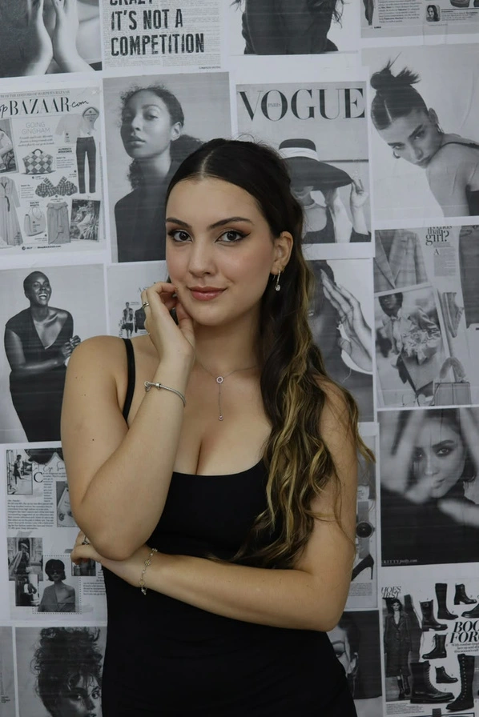
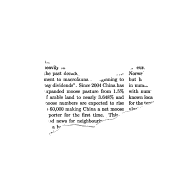
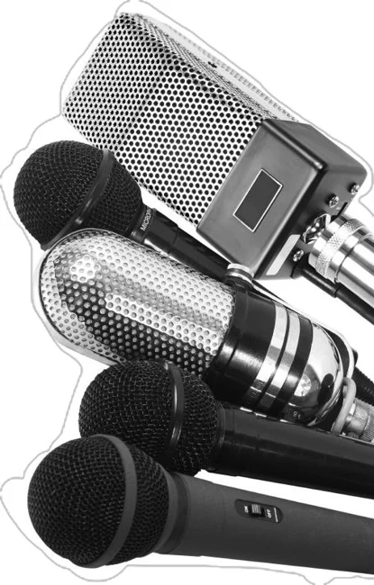
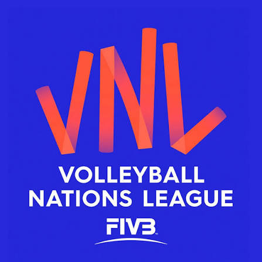
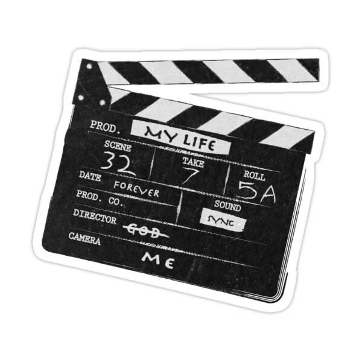
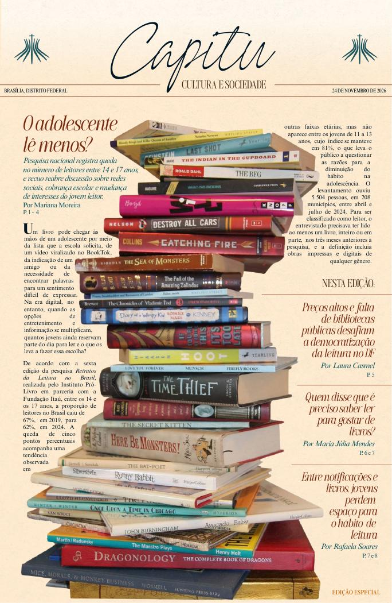
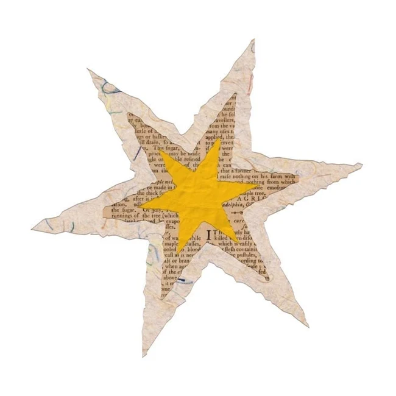
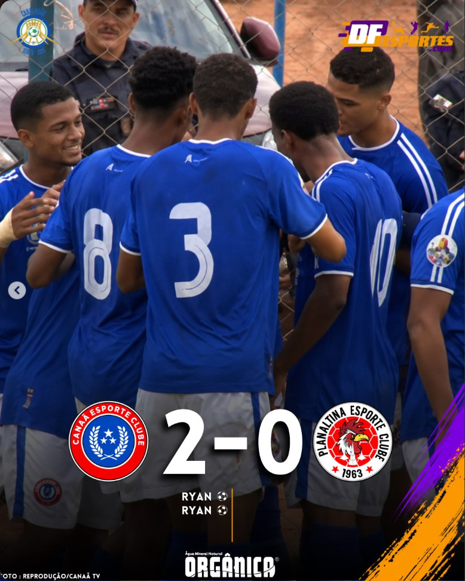
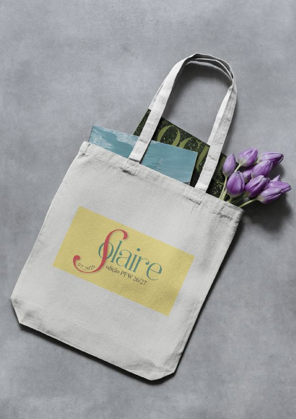

Apuração e redação de reportagens esportivas; cobertura da VNL em Brasília, com entrevistas em português e inglês, inclusive com atletas da seleção brasileira; gestão do Instagram, roteiros e edição de Reels e Stories.
DF Esportes · VNL 2026
Maria Júlia Mendes Jornalismo
Tenho 20 anos e sou estudante de Jornalismo. Amo meu curso e estou no terceiro semestre da faculdade.

Sou de Brasília e, desde que me lembro, a comunicação é o meu sonho.
Desde pequenininha, sempre admirei a comunicação, desde contar e ouvir histórias até cobrir uma rodada decisiva do Brasileirão.
Me chamo Maria Júlia,
mas pode me chamar de Maju.
Se você quer saber mais sobre mim…
eu sei bem onde você pode procurar!

Reportagens sobre vôlei, futebol e outras modalidades, com acesso direto à publicação original.
E como falar de esporte sem falar da

Cobertura da Liga das Nações de Vôlei em Brasília, com apuração presencial e entrevistas em português e inglês, incluindo atletas da Seleção Brasileira. Trabalho realizado pelo DF Esportes, com produção de reportagens e conteúdo para as redes sociais do portal.



Entrevistas realizadas durante a cobertura da VNL 2026 para o DF Esportes.

Além disso, tenho uma certa afinidade com a câmera.
Acho que você gostaria de conferir isso também!

Reportagem esportiva · Vôlei
Maria Júlia Mendes acompanha a formação de leitores na primeira infância e ouve educadoras do Distrito Federal sobre o papel das histórias em casa, na escola e na biblioteca.
Ler a reportagem · páginas 6 e 7
Eu também gosto de me aventurar bastante no mundo da criatividade do design.

Peças gráficas e conteúdo audiovisual produzidos para as redes sociais do DF Esportes, com foco na comunicação esportiva.



DF Esportes
DF Esportes
Projeto acadêmico de jornalismo de moda sobre a Paris Fashion Week, explorando moda, cultura, poder e influência, além da presença brasileira nas passarelas internacionais. A proposta editorial inclui uma revista de 30 páginas e materiais de divulgação que traduzem sua identidade visual.

Miolo completo · 30 páginas
Ler revista (PDF) ↗
Material de divulgação da revista
Ver projeto (PDF) ↗
Peça gráfica promocional
Ver projeto (PDF) ↗Desenvolvimento de roteiros para vídeos, com organização das ideias, construção de narrativa, definição de cenas e adaptação da linguagem ao público e à plataforma. Em breve, exemplos em vídeo deste trabalho.
Planejamento e execução de conteúdo para redes sociais da Dra. Tamara Mendes, com participação na roteirização, direção e condução de vídeos, além da criação de posts e carrosséis. Trabalho voltado à construção de narrativas acessíveis, humanizadas e alinhadas à comunicação profissional da especialista.
Desenvolvimento de ideias, roteiros e direção de gravação para conteúdos audiovisuais, organizando a mensagem e a apresentação para o formato vertical.
Criação e organização de sequências de conteúdo para apresentar temas, fortalecer a presença digital e aproximar a profissional do público.
Conteúdo digital para comunicação em odontopediatria, com linguagem acolhedora e foco na relação com famílias e pacientes.
Apuração e redação de reportagens esportivas; cobertura da VNL em Brasília, com entrevistas em português e inglês, inclusive com atletas da seleção brasileira; gestão do Instagram, roteiros e edição de Reels e Stories.
Fotografia, edição, composição visual e participação em projetos de comunicação e marketing.
Bacharelado em Jornalismo · ingresso em 2025, em andamento.
Smart Idiomas · conclusão em 2025. Intercâmbio de um mês na Irlanda para estudos da língua inglesa.
Curso de jornalismo esportivo · 2025.
Formação em língua inglesa e experiência de monitoria acadêmica, com certificações emitidas pelas instituições.

Curso de inglês geral realizado na Irlanda, com 15 horas semanais. Nível final registrado: B2.1.
Ver certificado original (PDF) ↗
Atividade de apoio a estudantes da 2ª série do Ensino Médio, com carga horária de 15 horas.
Ver certificado original (PDF) ↗

Disponível para oportunidades em jornalismo, comunicação e produção de conteúdo.
Enviar e-mail ↗